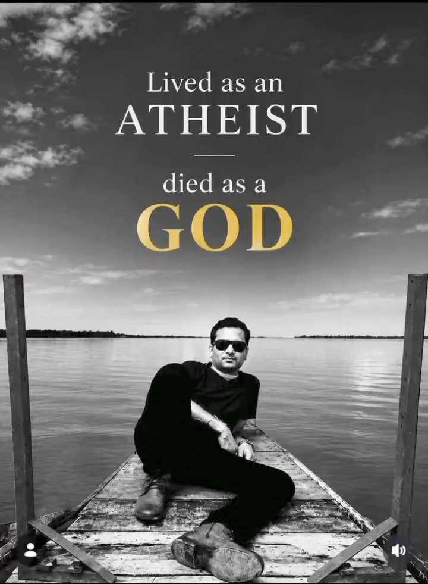

IN LOVING MEMORY
LEGENDS
NEVER DIE
জুবিন দা
যি কণ্ঠত অসমে নিজকে বিচাৰি পাইছিল

1968 — 2025
↓
19 SEPTEMBER 2026
IN LOVING MEMORY
যি কণ্ঠত অসমে নিজকে বিচাৰি পাইছিল
1968 — 2025
ONE YEAR WITHOUT YOUR VOICE
On this day, we remember the artist whose voice became part of countless lives. We remember the music, the memories and the moments that remain with us.
FROM ASSAM
His voice carried something deeply familiar — the emotion, memories and spirit of Assam.
THE VOICE
A song can end, but the feeling it leaves behind can remain for years. His voice became part of childhoods, journeys, celebrations and quiet moments.
THE MEMORIES
Melodies that became part of everyday life.
Memories connected to places, people and time.
A voice that remains recognizable through memory.
Music and cultural work remembered by generations.
A MESSAGE FROM THE HEART
We may never have met you personally, but your music found its way into our lives.
You gave us songs for happiness, songs for memories and songs for the moments when words were not enough.
A year has passed, but your voice still finds its way into our homes, our memories and our hearts.
Thank you for the music.

IN LOVING MEMORY
19 SEPTEMBER 2025